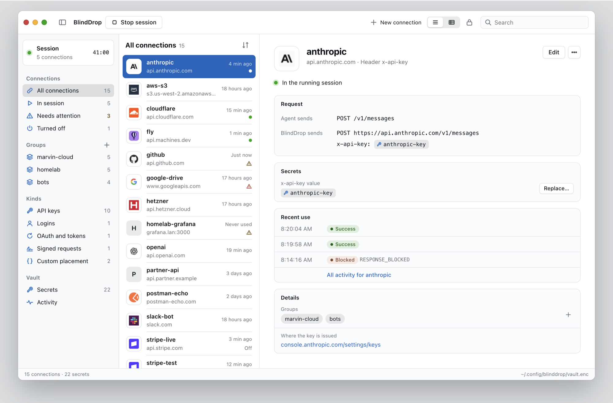

BlindDrop for macOS
Unlock your vault and manage keys, connections and agent sessions from a Mac app.


Install BlindDrop
$ npm install --global --prefix "$HOME/.local" \ https://github.com/IluvatarLabs/blinddrop/releases/download/v0.3.0/blinddrop-0.3.0.tgz
Paste that in a macOS or Linux terminal. Requires Node.js 22.13+.
Add ~/.local/bin to your PATH. Other versions are on the releases page.
What Does BlindDrop Do?
BlindDrop lets agents use your API keys without ever seeing them.
Keys stay in an encrypted vault on your computer. When an agent calls an API, BlindDrop adds the key, sends the request and returns the response.
# what the agent sends execute_http { "connection": "github", "method": "GET", "path": "/user" } # what BlindDrop sends to api.github.com GET /user Authorization: Bearer <github-pat>
BlindDrop Connections
BlindDrop stores secrets and connections.
A secret is an API key or token. You type it at a hidden prompt, and BlindDrop never shows it again.
A connection is what an agent asks for by name: one HTTPS origin, how that API authenticates, and the secrets it uses.
$ blinddrop init $ blinddrop secret set github-pat $ blinddrop connection set github \ --origin https://api.github.com \ --auth bearer --secret github-pat
Supported: bearer tokens, header and query keys, HTTP Basic, OAuth, JWT bearer, AWS SigV4 and client TLS certificates.
Anything else goes in a JSON file. See the configuration reference.
$ blinddrop connection import partner-api \
./partner-api.json
{
"origin": "https://api.example.com",
"allowPrivate": false,
"enabled": true,
"auth": {
"type": "bindings",
"bindings": [
{ "in": "json", "name": "client_id",
"secret": "client-id" },
{ "in": "json", "name": "secret",
"secret": "client-secret" }
]
}
}
BlindDrop Sessions
Agents can use connections only while a session runs.
Each session allows the connections you name. It lasts an hour unless you set --ttl.
The Claude Code plugin connects to a running session on its own, and also installs into Codex and Cursor. Other MCP clients get two tools: list_connections and execute_http.
For SDKs that accept a base URL, blinddrop run gives one command its own session.
$ blinddrop serve --http --allow github \ --ttl 3600 # prints an MCP URL and session token
$ blinddrop run github -- \ node examples/request.mjs /user # prints your GitHub account details
What BlindDrop Does Not Do
Database connections, SSH, WebSocket, gRPC and browser logins are not supported.
It is not a sandbox, and the API you call still receives the key.
BlindDrop Resources
Documentation
Read the configuration reference, client guide, OAuth guide and Fly.io guide.
Source
BlindDrop, the agent plugin and the macOS app are on GitHub.
Get Help
Open an issue. Report vulnerabilities through the security policy.
Releases
Get the latest release and read the changelog.
License
Free for noncommercial use under the PolyForm Noncommercial License 1.0.0.